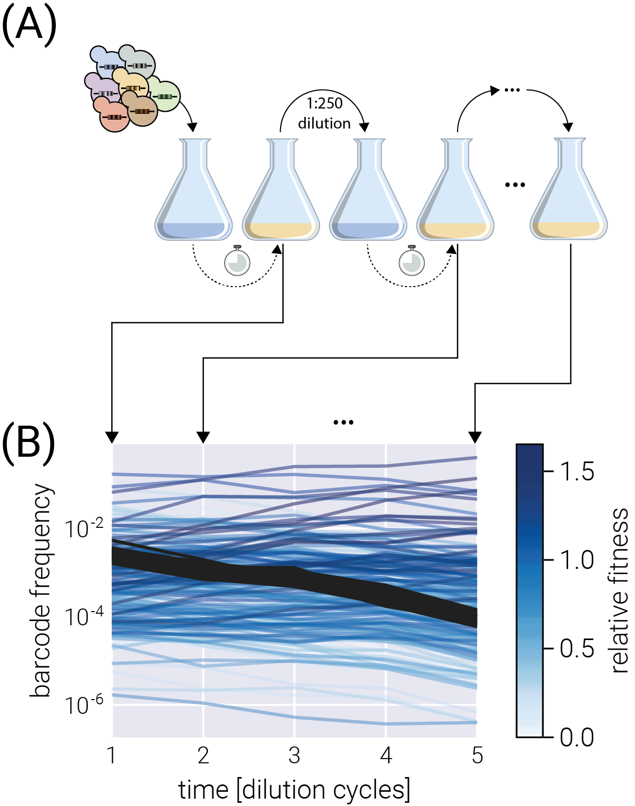
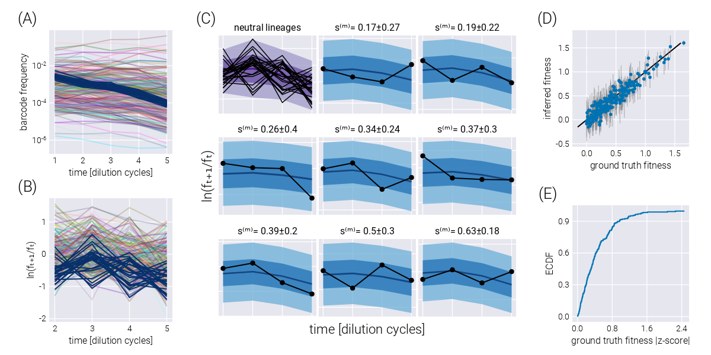
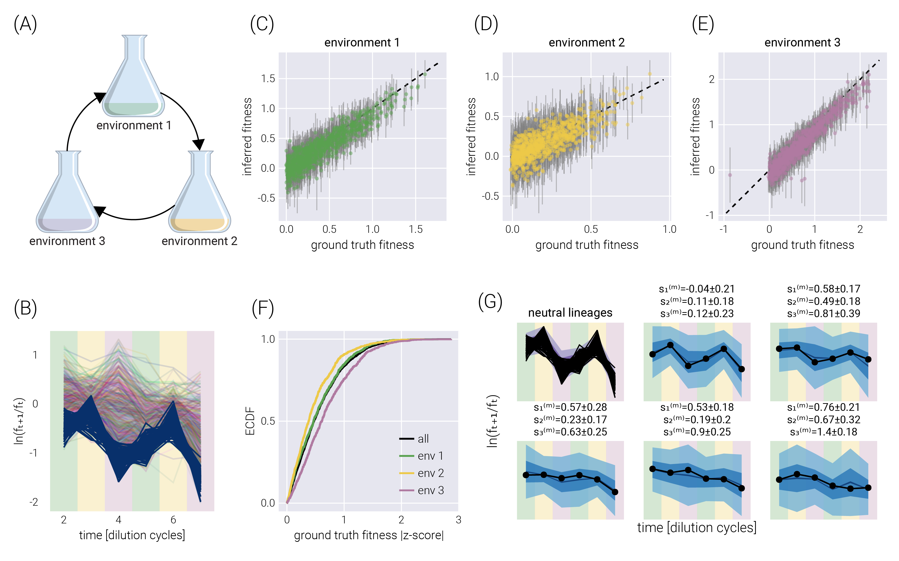
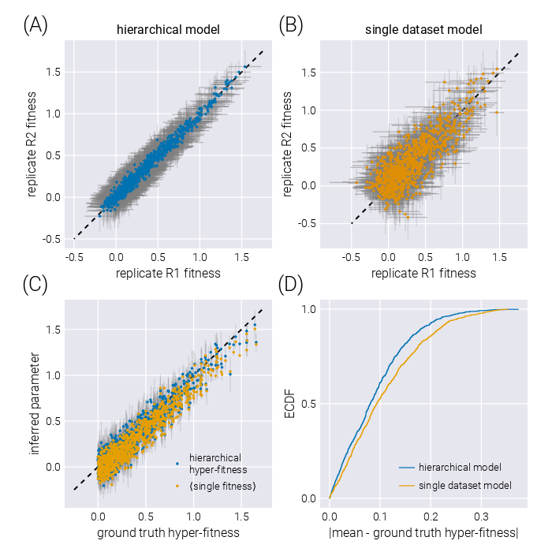
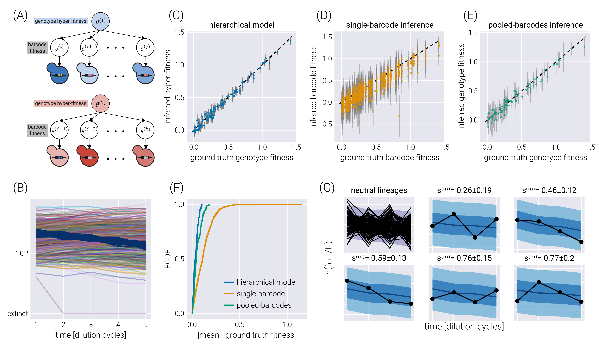
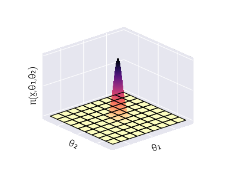
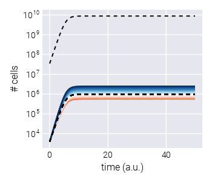
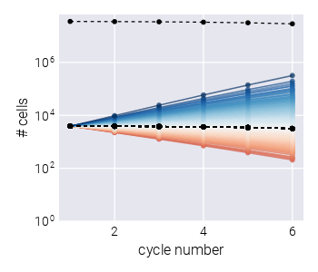
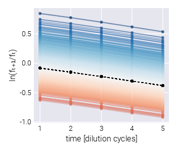
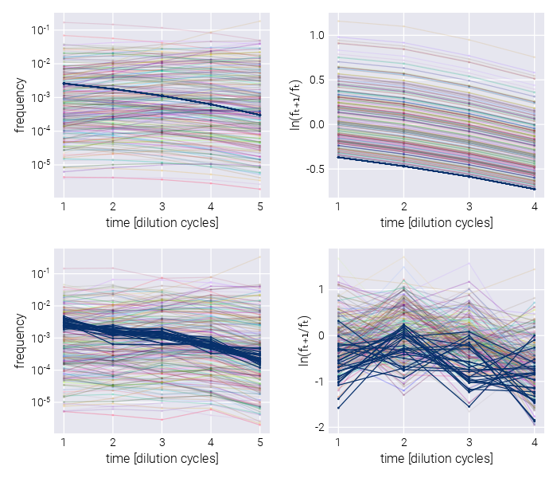

Bayesian inference of relative fitness on high-throughput pooled competition assays
Manuel Razo-Mejia ![]()
Madhav Mani
Dmitri Petrov
The tracking of lineage frequencies via DNA barcode sequencing enables the quantification of microbial fitness. However, experimental noise coming from biotic and abiotic sources complicates the computation of a reliable inference. We present a Bayesian pipeline to infer relative microbial fitness from high-throughput lineage tracking assays. Our model accounts for multiple sources of noise and propagates uncertainties throughout all parameters in a systematic way. Furthermore, using modern variational inference methods based on automatic differentiation, we are able to scale the inference to a large number of unique barcodes. We extend this core model to analyze multi-environment assays, replicate experiments, and barcodes linked to genotypes. On simulations, our method recovers known parameters within posterior credible intervals. This work provides a generalizable Bayesian framework to analyze lineage tracking experiments. The accompanying open-source software library enables the adoption of principled statistical methods in experimental evolution.
Introduction
The advent of DNA barcoding—the ability to uniquely identify cell lineages with DNA sequences integrated at a specific locus—and high-throughput sequencing has opened new venues for understanding microbial evolutionary dynamics with an unprecedented level of temporal resolution [1]–[3]. These experimental efforts rely on our ability to reliably infer the relative fitness of an ensemble of diverse genotypes. Moreover, inferring these fitness values over an ensemble of environmental conditions can help us determine the phenotypic diversity of a rapid adaptation process [4].
As with any other sequencing-based quantification, tracking lineages via DNA barcode sequencing is inexorably accompanied by noise sources coming from experimental manipulation of the microbial cultures, DNA extraction, and sequencing library preparation that involves multiple rounds of PCR amplification, and the sequencing process itself. Thus, accounting for the uncertainty when inferring the relevant parameters from the data is a crucial step to draw reliable conclusions. Bayesian statistics presents a paradigm by which one can account for all known sources of uncertainty in a principled way [5]. This, combined with the development of modern Markov Chain Monte Carlo sampling algorithms [6] and approximate variational approaches [7] have boosted a resurgence of Bayesian methods in different fields [8].
We present a Bayesian inference pipeline to quantify the uncertainty about the parametric information we can extract from high-throughput competitive fitness assays given a model of the data generation process and experimental data. In these assays, the fitness of an ensemble of genotypes is determined relative to a reference genotype [3], [4]. Figure 1(A) shows a schematic of the experimental procedure in which an initial pool of barcoded strains are mixed with a reference strain and inoculated into fresh media. After some time—usually, enough time for the culture to saturate—an aliquot is transferred to fresh media, while the remaining culture is used for DNA sequencing of the lineage barcodes. The time-series information of the relative abundance of each lineage, i.e., the barcode frequency depicted in Figure 1(B), is used to infer the relative fitness—the growth advantage on a per-cycle basis—for each lineage with respect to the reference strain. The proposed statistical model accounts for multiple sources of uncertainty when inferring the lineages’ relative fitness values (see Section 2.1 for details on sources of uncertainty accounted for by the model). Furthermore, minor changes to the core statistical model allow us to account for relevant experimental variations of these competition assays. More specifically, in Section 2.6, we present a variation of the statistical model to infer fitness on growth dilution cycles in multiple environments with proper error propagation. Furthermore, as described in Section 2.7, our statistical model can account for batch-to-batch differences when jointly analyzing multiple experimental replicates using a Bayesian hierarchical model. Finally, a variant of these hierarchical models, presented in Section 2.8, can account for variability within multiple barcodes mapping to equivalent genotypes within the same experiment.
For all the model variations presented in this paper, we benchmark the ability of our pipeline to infer relative fitness parameters against synthetic data generated from logistic growth simulations with added random noise. A Julia package accompanies the present method to readily implement the inference pipeline with state-of-the-art scientific computing software.
Results
Experimental setup
The present work is designed to analyze time-series data of relative abundance of multiple microbial lineages uniquely identified by a DNA barcode [3], [4]. In these competition assays, an ensemble of genotypes is pooled together with an unlabeled reference strain that, initially, represents the vast majority (\(\geq 90\%\)) of the cells in the culture (see schematic in Figure 1(A)). Furthermore, a fraction of labeled genotypes equivalent to the unlabeled reference strain—hereafter defined as neutral lineages—are spiked in at a relatively high abundance (\(\approx 3-5\%\)). The rest of the culture is left for the ensemble of genotypes of interest.
To determine the relative fitness of the ensemble of genotypes, a series of growth-dilution cycles are performed on either a single or multiple environments. In other words, the cultures are grown for some time; then, an aliquot is inoculated into fresh media for the next growth cycle. This process is repeated for roughly 4-7 cycles, depending on the initial abundances of the mutants and their relative growth rates. The DNA barcodes are sequenced at the end of each growth cycle to quantify the relative abundance of each of the barcodes. We point the reader to [4] for specific details on these assays for S. cerevisiae and to [3] for equivalent assays for E. coli. Figure 1(B) presents a typical barcode trajectory where the black trajectories represent the so-called neutral lineages, genetically equivalent to the untagged ancestor strain that initially dominates the culture. These spiked-in neutral lineages simplify the inference problem since the fitness metric of all relevant barcodes is quantified with respect to these barcodes—thus referred to as relative fitness.

Preliminaries on mathematical notation
Before jumping directly into the Bayesian inference pipeline, let us establish the mathematical notation used throughout this paper. We define (column) vectors as underlined lowercase symbols such as \[ \underline{x} = \begin{bmatrix} x_1\\ x_2\\ \vdots\\ x_N \end{bmatrix}. \tag{1}\] In the same way, we define matrices as double-underline uppercase symbols such as \[ \underline{\underline{A}} = \begin{bmatrix} A_{11} & A_{12} & \cdots & A_{1N}\\ A_{21} & A_{22} & \cdots & A_{2N}\\ \vdots & \vdots & \ddots & \vdots\\ A_{M1} & A_{M2} & \cdots & A_{MN}\\ \end{bmatrix}. \tag{2}\]
Fitness model
Empirically, each barcode frequency trajectory follows an exponential function of the form [1], [3], [4] \[ f_{t+1}^{(b)} = f_{t}^{(b)} \mathrm{e}^{(s^{(b)} - \bar{s}_t)\tau}, \tag{3}\] where \(f_{t}^{(b)}\) is the frequency of barcode \(b\) at the end of cycle number \(t\), \(s^{(b)}\) is the relative fitness with respect to the reference strain—the quantity we want to infer from the data—\(\bar{s}_t\) is the mean fitness of the culture at the end of cycle number \(t\), and \(\tau\) is the time pass between cycle \(t\) and \(t+1\). We can rewrite Equation 3 as \[ \frac{1}{\tau}\ln \frac{f_{t+1}^{(b)}}{f_{t}^{(b)}} = (s^{(b)} - \bar{s}_t). \tag{4}\] Equation 4 separates the measurements—the barcode frequencies—from the unobserved (sometimes referred to as latent) parameters we want to infer from the data—the population mean fitness and the barcode relative fitness. This is ultimately the functional form used in our inference pipeline. Therefore, the relative fitness is computed by knowing the log frequency ratio of each barcode throughout the growth-dilution cycles.
The presence of the neutral lineages facilitates the determination of the population mean fitness value \(\bar{s}_t\). Since every relative fitness is determined relative to the neutral lineage that dominates the culture, we define their fitness to be \(s^{(n)} = 0\), where the superscript \((n)\) specifies their neutrality. This means that Equation 4 for a neutral lineage takes the simpler form \[ \frac{1}{\tau}\ln \frac{f_{t+1}^{(n)}}{f_{t}^{(n)}} = - \bar{s}_t. \tag{5}\] Therefore, we can use the data from these reference barcodes to directly infer the value of the population mean fitness.
It is important to notice that the frequencies \(f_{t}^{(b)}\) are not the allele frequencies in the population (most of the culture is not sequenced since the reference strain is not barcoded), but rather the relative frequencies in the total number of sequencing reads. A way to conceptualize this subtle but important point is to assume exponential growth in the number of cells \(N_t^{(b)}\) of the form \[ N_{t+1}^{(b)} = N_{t}^{(b)} \mathrm{e}^{\lambda^{(b)}\tau}, \tag{6}\] for every barcode \(b\) with growth rate \(\lambda^{(b)}\). However, when we sequence barcodes, we do not directly measure the number of cells, but some number of reads \(r_t^{(b)}\) that map to barcode \(b\). In the simplest possible scenario, we assume \[ r_{t}^{(b)} \propto N_{t}^{(b)}, \tag{7}\] where, importantly, the proportionality constant depends on the total number of reads for the library for cycle \(t\), which might vary from library to library. Therefore, to compare the number of reads between libraries at different time points, we must normalize the number of reads to the same scale. The simplest form is to define a relative abundance, i.e., a frequency with respect to the total number of reads, \[ f_{t}^{(b)} \equiv \frac{r_{t}^{(b)}}{\sum_{b'} r_{t}^{(b')}}. \tag{8}\] This is the frequency Equation 3 describes.
Our ultimate objective is to infer the relative fitness \(s^{(b)}\) for each of the \(M\) relevant barcodes in the experiment—hereafter referred to as \(s^{(m)}\) to distinguish from the general \(s^{(b)}\) and the neutral lineages \(s^{(n)}\) relative fitness. To do so, we account for the three primary sources of uncertainty in our model:
- Uncertainty in the determination of frequencies. Our model relates frequencies between adjacent growth-dilution cycles to the fitness of the corresponding strain. However, we do not directly measure frequencies. Instead, our data for each barcode consists of a length \(T\) vector of counts \(\underline{r}^{(b)}\) for each of the \(T\) cycles in which the measurements were taken.
- Uncertainty in the value of the population mean fitness. We define neutral lineages to have fitness \(s^{(n)} = 0\), helping us anchor the value of the population mean fitness \(\bar{s}_t\) for each pair of adjacent growth cycles. Moreover, we take this parameter as an empirical parameter to be obtained from the data, meaning that we do not impose a functional form that relates \(\bar{s}_t\) to \(\bar{s}_{t+1}\). Thus, we must infer the \(T-1\) values of this population mean fitness with their uncertainty that must be propagated to the value of the mutants’ relative fitness.
- Uncertainty in each of the mutants’ fitness values.
To account for all these sources of uncertainty in a principled way, in the next section, we develop a Bayesian inference pipeline.
Bayesian inference
As defined in Section 2.3, our ultimate objective is to infer the vector of relative fitness values \[ \underline{s}^M = (s^{(1)}, s^{(2)}, \ldots, s^{(M)})^\dagger, \tag{9}\] where \(^\dagger\) indicates the transpose. Our data consists of an \(T \times B\) matrix \(\underline{\underline{R}}\), where \(B = M + N\) is the number of unique barcodes given by the sum of the number of unique, relevant barcodes we care about, \(M\), and the number of unique neutral barcodes, \(N\), and \(T\) is the number of growth cycles where measurements were taken. The data matrix is then of the form \[ \underline{\underline{R}} = \begin{bmatrix} - & \underline{r}_1 & - \\ - & \underline{r}_2 & - \\ & \vdots & \\ - & \underline{r}_T & - \\ \end{bmatrix}, \tag{10}\] where each row \(\underline{r}_t\) is a \(B\)-dimensional array containing the raw barcode counts at cycle \(t\). We can further split each vector \(\underline{r}_t\) into two vectors of the form \[ \underline{r}_t = \begin{bmatrix} \underline{r}_t^{N} \\ \underline{r}_t^{M} \end{bmatrix}, \tag{11}\] i.e., the vector containing the neutral lineage barcode counts \(\underline{r}_t^{N}\) and the corresponding vector containing the mutant barcode counts \(\underline{r}_t^{M}\). Following the same logic, matrix \(\underline{\underline{R}}\) can be split into two matrices as \[ \underline{\underline{R}} = \left[ \underline{\underline{R}}^N \; \underline{\underline{R}}^M \right], \tag{12}\] where \(\underline{\underline{R}}^N\) is a \(T \times N\) matrix with the barcode reads time series for each neutral lineage and \(\underline{\underline{R}}^M\) is the equivalent \(T \times M\) matrix for the non-neutral lineages.
Our objective is to compute the joint probability distribution for all relative fitness values given our data. We can express this joint posterior distribution using Bayes theorem as \[ \pi(\underline{s}^M \mid \underline{\underline{R}}) = \frac{ \pi(\underline{\underline{R}} \mid \underline{s}^M) \pi(\underline{s}^M)} {\pi(\underline{\underline{R}})}, \tag{13}\] where hereafter \(\pi(\cdot)\) defines a probability density function. When defining our statistical model, we need not to focus on the denominator on the right-hand side of Equation 13. Thus, we can write \[ \pi(\underline{s}^M \mid \underline{\underline{R}}) \propto \pi(\underline{\underline{R}} \mid \underline{s}^M) \pi(\underline{s}^M). \tag{14}\] However, when implementing the model computationally, the normalization constant on the right-hand side of Equation 13 must be computed. This can be done from the definition of the model via an integral of the form \[ \pi(\underline{\underline{R}}) = \int d^M \underline{s}^M \pi(\underline{\underline{R}} \mid \underline{s}^M) \pi(\underline{s}^M), \tag{15}\] also known as a marginalization integral. Hereafter, differentials of the form \(d^n\) imply a \(n\)-dimensional integral.
Although Equation 13 and Equation 14 seem simple enough, recall that Equation 3 relates barcode frequency values and the population mean fitness to the mutant relative fitness. Therefore, we must include these nuisance parameters as part of our inference problem. We direct the reader to the supplementary materials for the exact definitions of these parameters. Here, it suffices to say that the inference problem must include the vector \(\underline{\bar{s}}_T\) of all population mean fitness values and the matrix \(\underline{\underline{F}}\) of all barcode frequencies within the sequencing data. With these nuisance variables in hand, the full inference problem we must solve takes the form \[ \pi( \underline{s}^M, \underline{\bar{s}}_T, \underline{\underline{F}} \mid \underline{\underline{R}} ) \propto \pi( \underline{\underline{R}} \mid \underline{s}^M, \underline{\bar{s}}_T, \underline{\underline{F}} ) \pi( \underline{s}^M, \underline{\bar{s}}_T, \underline{\underline{F}} ). \tag{16}\] To recover the marginal distribution over the non-neutral barcodes relative fitness values, we can numerically integrate out all nuisance parameters, i.e., \[ \pi(\underline{s}^M \mid \underline{\underline{R}}) = \int d^{T-1}\underline{\bar{s}}_T \int d^{B}\underline{f}_1 \cdots \int d^{B}\underline{f}_T \; \pi( \underline{s}^M, \underline{\bar{s}}_T, \underline{\underline{F}} \mid \underline{\underline{R}} ). \tag{17}\]
Factorizing the posterior distribution
The left-hand side of Equation 16 is extremely difficult to work with. However, we can take advantage of the structure of our inference problem to rewrite it in a more manageable form. Specifically, the statistical dependencies of our observations and latent variables allow us to factorize the joint distribution into the product of multiple conditional distributions. To gain some intuition about this factorization, let us focus on the inference of the population mean fitness values \(\underline{\bar{s}}_T\). Equation 5 relates the value of the population mean fitness to the neutral lineage frequencies and nothing else. This suggests that when writing the posterior for these population mean fitness parameters, we should be able to condition it only on the neutral lineage frequency values, i.e., \(\pi(\underline{\bar{s}}_T \mid \underline{\underline{F}}^N)\). We point the reader to Section 5.2 for the full mathematical details on this factorization. For our purpose here, it suffices to say we can rewrite the joint probability distribution as a product of conditional distributions of the form \[ \pi( \underline{s}^M, \underline{\bar{s}}_T, \underline{\underline{F}} \mid \underline{\underline{R}} ) = \pi( \underline{s}^M \mid \underline{\bar{s}}_T, \underline{\underline{F}}^M ) \pi( \underline{\bar{s}}_T \mid \underline{\underline{F}}^N ) \pi(\underline{\underline{F}} \mid \underline{\underline{R}}). \tag{18}\] Written in this form, Equation 18 captures the three sources of uncertainty listed in Section 2.3 in each term. Starting from right to left, the first term on the right-hand side of Equation 18 accounts for the uncertainty when inferring the frequency values given the barcode reads. The second term accounts for the uncertainty in the values of the mean population fitness at different time points. The last term accounts for the uncertainty in the parameter we care about—the mutants’ relative fitnesses. We refer the reader to Section 5.2 for an extended description of the model with specific functional forms for each term on the left-hand side of Equation 18 as well as the extension of the model to account for multiple experimental replicates or hierarchical genotypes.
Variational Inference
One of the technical challenges to the adoption of Bayesian methods is the analytical intractability of integrals such as that of Equation 17. Furthermore, even though efficient Markov Chain Monte Carlo (MCMC) algorithms such as Hamiltonian Montecarlo can numerically perform this integration [6], the dimensionality of the problem in Equation 18 makes an MCMC-based approach prohibitively slow.
To overcome this computational limitation, we rely on the recent development of the automatic differentiation variational inference algorithm (ADVI) [7]. Briefly, when performing ADVI, our target posterior distribution \(\pi(\theta \mid \underline{\underline{R}})\), where \(\theta = (\underline{s}^M, \underline{\bar{s}}_T, \underline{\underline{F}})\), is replaced by an approximate posterior distribution \(q_\phi(\theta)\), where \(\phi\) fully parametrizes the approximate distribution. As further explained in Section 5.1, the numerical integration problem is replaced by an optimization problem of the form \[ q^*_\phi(\theta) = \min _\phi D_{KL}( q_\phi(\theta) \lvert \lvert \pi(\theta \mid \underline{\underline{R}}) ), \tag{19}\] where \(D_{KL}\) is the Kulback-Leibler divergence. In other words, the complicated high-dimensional numerical integration problem is transformed into a much simpler problem of finding the value of the parameters \(\phi\) such that Equation 23 is satisfied as best as possible within some finite computation time. Although to compute Equation 23, we require the posterior distribution we are trying to approximate \(\pi(\theta \mid \underline{\underline{R}})\), it can be shown that maximizing the so-called evidence lower bound (ELBO) [9]—equivalent to minimizing the variational free energy [10]—is mathematically equivalent to performing the optimization prescribed by Equation 23. We direct the reader to Section 5.1 for a short primer on variational inference.
This work is accompanied by the Julia library BarBay.jl that makes use of the implementation of both MCMC-based integration as well as ADVI optimization to numerically approximate the solution of Equation 17 within the Julia ecosystem [11].
Inference on a single dataset
To assess the inference pipeline performance, we applied it to a simulated dataset with known ground truth relative fitness values (See Section 5.4 for details on simulation). Figure 2(A) shows the structure of the synthetic dataset. The majority of barcodes of interest (faint color lines) are adaptive compared to the neutral barcodes (\(s^{(m)} > 0\)). Although the barcode frequency trajectories look relatively smooth, our fitness model requires the computation of the log frequency ratio between adjacent time points as derived in Equation 4. Figure 2(B) shows such data transformation where we can better appreciate the observational noise input into our statistical model. This noise is evident for the darker lines representing the neutral barcodes since all of these lineages are assumed to be identically distributed.
To visualize the performance of our inference pipeline in fitting our fitness model to the observed data, we compute the so-called posterior predictive checks (PPC). In short, the PPC consists of repeatedly generating synthetic datasets in agreement with the results from the inference results. In other words, we use the resulting parameter values from the ADVI inference to generate possible datasets in agreement with the inferred values (See Section 5.3 for further details on these computations). Figure 2(C) shows these results for all neutral lineages (upper left corner plot) and a few representative non-neutral barcodes. The different color shades represent the 95%, 68%, and 5% credible regions, i.e., the regions where we expect to find the data with the corresponding probability—or in terms of our parameter, the \(X\%\) credible region is the interval where we expect the true parameter value to lie with \(X\%\) probability.
The main advantage of our method is this natural interpretability of these credible regions where an \(X\%\) credible region indeed captures the region of parameter space where we expect with \(X\%\) probability the actual value of the parameter lies given our statistical model, our prior information, and the observed experimental data. A common mistake in the literature is interpreting frequentist confidence intervals as Bayesian credible regions when they are not equivalent [12]. Frequentist confidence intervals and Bayesian credible regions are based on fundamentally different philosophical approaches to statistics. Frequentist confidence intervals represent the range of values that would contain the true population parameter with a certain probability if the experiment was repeated many times. The confidence interval does not represent the probability that the interval contains the true value. According to a specific model and prior information, Bayesian credible regions represent the range of values that contain the parameter with a certain posterior probability. The credible region directly represents the probability that the region contains the true value. So, frequentist confidence intervals cannot be interpreted as Bayesian credible regions because they have fundamentally different meanings. Treating an \(X\%\) confidence interval like an \(X\%\) credible region is fallacious since confidence intervals do not represent probabilistic coverage of the true value like credible regions. The intervals are generated through entirely different procedures.
To capture the global performance of the model, Figure 2(D) compares the known ground truth with the inferred relative fitness value for all barcodes of interest. There is an excellent degree of correspondence between these values, with the error bars representing the 68% credible region for the parameter value crossing the identity line for most barcodes. This latter point is made clear with Figure 2(E) where \(\approx 90\%\) of ground truth fitness values fall within one standard deviation of the mean in the inferred posterior distributions.

Fitness inference on multiple environments
The fitness model in Equation 3 relates nuisance parameters such as the population mean fitness and the barcode frequencies to the relative fitness parameter we want to infer from the data. These dependencies imply that uncertainty on the estimates of these nuisance parameters influences the inference of the relevant parameters. For example, imagine a scenario where the neutral lineages data were incredibly noisy, leading to poor estimates of the population mean fitness values \(\underline{\bar{s}}_T\). Since the relative fitness of any non-neutral barcode \(s^{(m)}\) is determined with respect to these neutral barcodes, not accounting for the lack of precision in the value of the population mean fitness would result in misleading estimates of the accuracy with which we determine the value of the parameter we care about. Thus, propagating these sources of uncertainty in nuisance parameters is vital to generate an unbiased estimate of the relevant information we want to extract from the data. One of the benefits of Bayesian methods is the intrinsic error propagation embedded in the mathematical framework. For our previous example, the uncertainty on the value of the population mean fitness values is propagated to the relative fitness of a non-neutral barcode since we defined a joint posterior distribution over all parameters as fully expressed in Equation 16.
This natural error propagation can help us with the experimental design schematized in Figure 3(A). Here, rather than performing growth-dilution cycles in the same environment, the cells are diluted into a different environment. Thus, the uncertainty on the fitness estimate for the previous environment must be propagated to that of the next one. To validate the extension of our statistical model to this scenario, Figure 3(B) shows the trajectory of the log frequency ratios between adjacent time points. The different colored regions correspond to the different environments. For this simulation, the growth rate of Environment 2 was set to be, on average, half of the average growth rate in Environment 1. Equivalently, the growth rate in Environment 3 was set to be, on average, twice the average growth rate in Environment 1. Figure 3(C-E) show the correspondence between the simulation ground truth and the inferred fitness values, where the error bars represent the 68% credible region. Figure 3(F) summarizes the performance of our inference pipeline by showing the empirical cumulative distribution functions for the absolute value of the ground truth fitness value z-score within the posterior distribution. This plot shows that, overall, \(\approx 75\%\) of inferred mean values fall within one standard deviation of the ground truth. For completeness, Figure 3(G) shows the posterior predictive checks for a few example barcodes.

Accounting for experimental replicates via hierarchical models
Our inference pipeline can be extended to account for multiple experimental replicates via Bayesian hierarchical models [13]. Briefly, when accounting for multiple repeated measurements of the same phenomena, there are two extreme cases one can use to perform the data analysis: On the one hand, we can treat each measurement as entirely independent, losing the power to utilize multiple measurements when trying to learn a single parameter. This can negatively impact the inference since, in principle, the value of our parameter of interest should not depend on the particular experimental replicate in question. However, this approach does not allow us to properly “combine” the uncertainties in both experiments when performing the inference. On the other hand, we can pool all data together and treat our different experiments as a single measurement with higher coverage. This loses the subtle differences due to biotic and abiotic batch effects, effectively halving the data that goes into our inference problem.
Hierarchical models present a middle ground between these extremes. First, hierarchical models rely on the definition of so-called hyper-parameters, that capture the parametric inference we are interested in—for this inference problem, we have a hyper-fitness value \(\theta^{(m)}\) for each non-neutral barcode. Second, each experiment draws randomly from the distribution of this hyper-parameter, allowing for subtle variability between experiments to be accounted for—in the present inference pipeline, each experimental replicate gets assigned a local fitness value \(s^{(m)}_i\), where the extra sub-index indicates the \(i\)-th experimental replicate. Conceptually, we can think of the local fitness for replicate \(i\) as being sampled from a distribution that depends on the value of the global hyper-fitness value, i.e., \(s^{(m)}_i \sim \pi_{\theta^{(m)}}\), where the subindex \(\theta^{(m)}\) indicates the distribution’s parametric dependence on the hyper-fitness value. This way of interpreting the connection between the distribution \(\pi_{\theta^{(m)}}\) and the local fitness implies that a large replicate-to-replicate variability would lead to a broad hyper-fitness distribution—implying a large uncertainty when determining the parameter that characterizes the overall relative fitness. We point the reader to Section 5.2.4 for the full definition of the hierarchical model used in this section. Importantly, as schematized in Figure 4(A), the influence between different experimental replicates runs both ways. First, the data from one experimental replicate (\(\underline{\underline{R}}^M_k\) in the diagram) informs all local fitness values via the global hyper-fitness (upper panel in Figure 4(A)). Second, the local fitness value is informed by the data from all experimental replicates via the same global hyper-fitness parameter (lower panel in Figure 4(A)).
To test the performance of this model, we simulated two experimental replicates with 1000 unique barcodes (see Figure 4(B-C)) where we randomly sampled a ground truth hyper-fitness value \(\theta^{(m)}\) for each barcode. We sampled a variation from this hyper-fitness value for each experimental replicate \(s^{(m)}_i\) to capture experimental batch effects. Figure 4(D) shows the relationship between hyper-fitness and replicate fitness values for this simulation. The spread around the identity line represents the expected batch-to-batch variation. The posterior predictive checks examples in Figure 4(E) show that the hierarchical model can correctly fit the data for each experimental replicate. Furthermore, Figure 4(F-G) show a high correlation between the ground truth and the inferred fitness values. The empirical cumulative distribution functions shown in Figure 4(H-I) reveal that for \(\approx 75\%\) of the non-neutral barcodes, the ground truth hyper-fitness values fall within one standard deviation from the mean value in the posterior distributions.

As shown in Figure 5, the structure imposed by the hierarchical model schematized in Figure 4(A), where we explicitly account for the connection between experimental replicates can improve the quality of the inference. Inferred fitness values between experimental replicates exhibit a stronger degree of correlation in the hierarchical model (Figure 5(A)) compared to conducting inference on each replicate independently (Figure 5(B)). Moreover, when comparing the inferred hyper-fitness values—the objective parameter when performing multiple experimental measurements—the hierarchical model outperforms averaging the independent experimental replicates as shown in Figure 5(C) and (D).

Accounting for multiple barcodes per genotype via hierarchical models
Hierarchical models can also capture another experimental design in which multiple barcodes map to the same or an equivalent genotype. As we will show, this many-to-one mapping can improve the inference compared to the extreme cases of inferring the fitness of each barcode independently or pooling the data of all barcodes mapping to a single genotype. As schematized in Figure 6(A), a small modification of the base model allows us to map the structure of our original model to that of a hierarchical model with a fitness hyperparameter vector \(\underline{\theta}^G\), where \(G\) is the number of genotypes in the dataset.
Figure 6(B) shows a single experimental replicate in which 90 genotypes were assigned a random number of barcodes (a multinomial distribution with a mean of ten barcodes per genotype) for a total of 900 non-neutral barcodes. To assess the performance of the hierarchical model proposed in Figure 6(A), we performed inference using this hierarchical model, as well as the two extreme cases of ignoring the connection between the barcodes belonging to the same genotype—equivalent to performing inference using the model presented in Figure 2(A) over the barcodes—or pooling the data of all barcodes belonging to the same genotype into a single count—equivalent to performing inference using the model presented in Figure 2(A) over the pooled barcodes. Figure 6(C-D) shows the comparison between the simulation ground truth and the inferred values for these three cases. Not only do the hierarchical model results show higher degrees of correlation with the ground truth, but the error bars (representing the 68% credible regions) are smaller, meaning that the uncertainty in the estimate of the parameter we care about decreases when using the hierarchical model. The improvement in the prediction can be seen in Figure 6(F) where the empirical cumulative distribution function of the absolute difference between the mean inferred value and the simulation ground truth is shown for all three inference models. The hierarchical model’s curve ascends more rapidly, showing that, in general, the inferred values are closer to the ground truth. For completeness, Figure 6(G) shows some examples of how the hierarchical model can capture the raw log-frequency count observations.

Discussion
Experimental evolution of microbial systems has dramatically advanced our understanding of the basic principles of biological evolution [14]. From questions related to the optimal fine-tuning of gene expression programs [15], to the dimensionality, geometry, and accessibility of the adaptive fitness landscape explored by these rapidly adapting populations [4], [16], to the emergence of eco-evolutionary dynamics in a long-term evolution experiment [17]; for all of these and other cases, the microbial experimental platform combined with high-throughput sequencing has been essential to tackling these questions with empirical data. This exciting research area promises to improve as new culturing technologies [18] as well as more complex lineage barcoding schemes [2], [19], are adopted.
For this data-heavy field, properly accounting for the uncertainty in parameters inferred from experiments is vital to ensure the conclusions drawn are reliable. Bayesian statistics presents a principled way to quantify this uncertainty systematically [20]. Moreover, Bayesian analysis offers a more natural way to interpret the role that probability theory plays when performing data analysis compared to the often-misinterpreted frequentist methods [21]. Nevertheless, the technical challenges associated with Bayesian analysis has limited its application. This is set to change as recognition of the misuse of frequentist concepts such as the p-value is receiving more attention [22]. Moreover, advances in numerical methods such as Hamiltonian Monte Carlo [6] and variational inference [7] allows for complex Bayesian models to be fit to empirical data.
In this paper, we present a computational pipeline to analyze lineage-tracking time-series data for massive-parallel competition assays. More specifically, we fit a Bayesian model to infer the fitness of multiple genotypes relative to a reference [3], [4]. The proposed model accounts for multiple sources of uncertainty with proper error propagation intrinsic to Bayesian methods. To scale the inference pipeline to large datasets with \(> 10,000\) barcodes, we use the ADVI algorithm [7] to fit a variational posterior distribution. The main difference between our method and previous inference pipelines, such as [23], is that the present analysis provides interpretable errors on the inferred fitness values. The reported uncertainty intervals—known as credible regions—can be formally interpreted as capturing the corresponding probability mass of finding the true value of the parameter given the model, the prior information, and the data. Furthermore, minor modifications to the structure of the statistical model presented in this work allow for the analysis of different experimental designs, such as growth-dilution cycles in different environments, joint analysis of multiple experimental replicates of the same experiment via hierarchical models, and a hierarchical model for multiple barcodes mapping to equivalent genotypes. We validate our analysis pipeline on simulated datasets with known ground truth, showing that the model fits the data adequately, capturing the ground truth parameters within the posterior distribution.
It is important to highlight some of the consequences of the general experimental design and the implicit assumptions within the proposed statistical model to analyze the resulting data. First, the composition of the population is such that the initial fraction of the population occupied by the barcoded genotypes is small—usually >90% of the initial population is the non-labeled reference strain. This constraint is important as the fitness model used to fit the time series data assumes that the tracked frequencies are \(\ll 1\). Second, when computing log frequency ratios, we can run into the issue of dividing by zero. This is a common problem when dealing with molecular count data [24]. Our model gets around this issue by assuming that the frequency of any barcode cannot be, but still can get arbitrarily close to, zero. Therefore, we implicitly assume that no lineage goes extinct during the experiment. Moreover, the statistical model directly accounts for the uncertainty associated with having zero barcode counts, increasing the corresponding uncertainty. Third, the models presented in this paper require the existence of a labeled sub-population of barcoded reference strains. These barcodes help determine the fitness baseline, as every fitness is quantified with respect to this reference genotype. This experimental design constraint facilitates the inference of the population mean fitness since most of the culture—the unlabeled reference genotype—is not tracked. Finally, the presented statistical model assumes that relative fitness is solely a constant of the environment and the genotype. Future directions of this work could extend the fitness model to properly analyze data with time-varying or frequency-dependent fitness values.
In total, the statistical model presented in this work and the software package accompanying the paper allow for a principled way of quantifying the accuracy with which we can extract relevant parametric information from large-scale multiplexed fitness competition assays. Furthermore, the implementation of Bayesian models and their fitting via automatic differentiation approaches opens the gate to extend this type of formal analysis to the data-rich literature in experimental evolution and other high-throughput technologies applications.
Acknowledgements
We would like to thank Griffin Chure and Michael Betancourt for their helpful advice and discussion. We would like to thank Karna Gowda, Spencer Farrell, and Shaili Mathur for critical observations on the manuscript. This work was supported by the NIH/NIGMS, Genomics of rapid adaptation in the lab and in the wild R35GM11816506 (MIRA grant), the NIH, Unravelling mechanisms of tumor suppression in lung cancer R01CA23434903, the NIH (PQ4), Quantitative and multiplexed analysis of gene function in cancer in vivo R01CA23125303, the NIH, Genetic Determinants of Tumor Growth and Drug Sensitivity in EGFR Mutant Lung Cancer R01CA263715, the NIH, Dissecting the interplay between aging, genotype, and the microenvironment in lung cancer U01AG077922, the NIH, Genetic dissection of oncogenic Kras signaling R01CA230025, and the CZ Biohub investigator program. MRM was supported by the Schmidt Science Fellowship. MM was supported by The National Science Foundation-Simons Center for Quantitative Biology at Northwestern University and the Simons Foundation grant 597491. MM is a Simons Investigator. DP is a CZ Biohub investigator.
Supplementary Materials
Primer on Variational Inference
In this section, we will briefly introduce the idea behind variational inference. Recall that any Bayesian inference problem deals with the joint distribution between observations \(\underline{x}\) and unobserved latent variables \(\underline{\theta}\). This joint distribution can be written as the product of a distribution of the observations \(\underline{x}\) conditioned on the \(\underline{\theta}\) and the marginal distribution of these latent variables, i.e., \[ \pi(\underline{x}, \underline{\theta}) = \pi(\underline{x} \mid \underline{\theta}) \pi(\underline{\theta}). \tag{20}\] A Bayesian inference pipeline’s objective is to compute the latent variables’ posterior probability given a set of observations. This computation is equivalent to updating our prior beliefs about the set of values that the latent variables take after taking in new data. We write this as Bayes theorem \[ \pi(\underline{\theta} \mid \underline{x}) = \frac{ \pi(\underline{x} \mid \underline{\theta})\pi(\underline{\theta}) }{ \pi(\underline{x}) }. \tag{21}\] The main technical challenge for working with Equation 21 comes from the computation of the denominator, also known as the evidence or the marginalized likelihood. The reason computing this term is challenging is because it involves a (potentially) high-dimensional integral of the form \[ \pi(\underline{x}) = \int\cdots\int d^K\underline{\theta}\; \pi(\underline{x}, \underline{\theta}) = \int\cdots\int d^K\underline{\theta}\; \pi(\underline{x} \mid \underline{\theta}) \pi(\underline{\theta}), \tag{22}\] where \(K\) is the dimesionality of the \(\underline{\theta}\) vector. Here, the integrals are taken over the support—the set of values valid for the distribution—of \(\pi(\underline{\theta})\). However, only a few selected distributions have a closed analytical form; thus, in most cases Equation 22 must be solved numerically.
Integration in high-dimensional spaces can be computationally extremely challenging. For a naive numerical quadrature procedure, integrating over a grid of values for each dimension of \(\underline{\theta}\) comes with an exponential explosion of the number of required grid point evaluations, most of which do not contribute significantly to the integration. To gain visual intuition about this challenge, imagine integrating the function depicted in Figure 7. If the location of the high-density region (dark peak) is unknown, numerical quadrature requires many grid points to ensure we capture this peak. However, most of the numerical evaluations of the function on the grid points do not contribute significantly to the integral. Therefore, our computational resources are wasted on insignificant evaluations. This only gets worse as the number of dimensions increases since the number of grid point evaluation scales exponentially.

Modern Markov Chain Monte Carlo algorithms, such as Hamiltonian Monte Carlo, can efficiently perform this high-dimensional integration by utilizing gradient information from the target density [6]. Nevertheless, these sampling-based methods become prohibitively slow for the number of dimensions our present inference problem presents. Thus, there is a need to find scalable methods for the inference problem in Equation 21.
Variational inference circumvents these technical challenges by proposing an approximate solution to the problem. Instead of working with the posterior distribution in its full glory \(\pi(\underline{\theta} \mid \underline{x})\), let us propose an approximate posterior distribution \(q_\phi\) that belongs to a distribution family fully parametrized by \(\phi\). For example, let us say that the distribution \(q_\phi\) belongs to the family of multivariate Normal distributions such that \(\phi = (\underline{\mu}, \underline{\underline{\Sigma}})\), where \(\underline{\mu}\) is the vector of means and \(\underline{\underline{\Sigma}}\) is the covariance matrix. If we replace \(\pi\) by \(q_\phi\), we want \(q_\phi\) to resemble the original posterior as much as possible. Mathematically, this can be expressed as minimizing a “distance metric”—the Kullback-Leibler (KL) divergence, for example—between the distributions. Note that we use quotation marks because, formally, the KL divergence is not a distance metric since it is not symmetric. Nevertheless, the variational objective is set to find a distribution \(q_\phi^*\) such that \[ q_\phi^*(\underline{\theta}) = \min_\phi D_{KL}\left( q_\phi(\underline{\theta}) \vert\vert \pi(\underline{\theta} \mid \underline{x}) \right), \tag{23}\] where \(D_{KL}\) is the KL divergence. Furthermore, we highlight that the KL divergence is a strictly positive number, i.e., \[ D_{KL}\left( q_\phi(\underline{\theta}) \vert\vert \pi(\underline{\theta} \mid \underline{x}) \right) \geq 0, \tag{24}\] as this property will become important later on.
At first sight, Equation 23 does not improve the situation but only introduces further technical complications. After all, the definition of the KL divergence \[ D_{KL}\left( q_\phi(\underline{\theta}) \vert\vert \pi(\underline{\theta} \mid \underline{x}) \right) \equiv \int \cdots \int d^K\underline{\theta}\; q_\phi(\underline{\theta}) \ln \frac{ q_\phi(\underline{\theta}) }{ \pi(\underline{\theta} \mid \underline{x}) }, \tag{25}\] includes the posterior distribution \(\pi(\underline{\theta} \mid \underline{x})\) we are trying to get around. However, let us manipulate Equation 25 to beat it to a more reasonable form. First, we can use the properties of the logarithms to write \[ D_{KL}\left( q_\phi(\underline{\theta}) \vert\vert \pi(\underline{\theta} \mid \underline{x}) \right) = \int d^K\underline{\theta}\; q_\phi(\underline{\theta}) \ln q_\phi(\underline{\theta}) - \int d^K\underline{\theta}\; q_\phi(\underline{\theta}) \ln \pi(\underline{\theta} \mid \underline{x}), \tag{26}\] where, for convenience, we write a single integration sign (\(d^K\underline{\theta}\;\) still represents a multi-dimensional differential). For the second term in Equation 26, we can substitute the term inside the logarithm using Equation 21. This results in \[ \begin{aligned} D_{KL}\left( q_\phi(\underline{\theta}) \vert\vert \pi(\underline{\theta} \mid \underline{x}) \right) &= \int d^K\underline{\theta}\; q_\phi(\underline{\theta}) \ln q_\phi(\underline{\theta}) \\ &- \int d^K\underline{\theta}\; q_\phi(\underline{\theta}) \ln \left( \frac{ \pi(\underline{x} \mid \underline{\theta})\pi(\underline{\theta}) }{ \pi(\underline{x}) } \right). \end{aligned} \tag{27}\] Again, using the properties of logarithms, we can split Equation 27, obtaining \[ \begin{aligned} D_{KL}\left( q_\phi(\underline{\theta}) \vert\vert \pi(\underline{\theta} \mid \underline{x}) \right) &= \int d^K\underline{\theta}\; q_\phi(\underline{\theta}) \ln q_\phi(\underline{\theta}) \\ &-\int d^K\underline{\theta}\; q_\phi(\underline{\theta}) \ln \pi(\underline{x} \mid \underline{\theta}) \\ &-\int d^K\underline{\theta}\; q_\phi(\underline{\theta}) \ln \pi(\underline{\theta}) \\ &+\int d^K\underline{\theta}\; q_\phi(\underline{\theta}) \ln \pi(\underline{x}). \end{aligned} \tag{28}\] It is convenient to write Equation 28 as \[ \begin{aligned} D_{KL}\left( q_\phi(\underline{\theta}) \vert\vert \pi(\underline{\theta} \mid \underline{x}) \right) &= \int d^K\underline{\theta}\; q_\phi(\underline{\theta}) \ln \frac{ q_\phi(\underline{\theta}) }{ \pi(\underline{\theta}) } \\ &-\int d^K\underline{\theta}\; q_\phi(\underline{\theta}) \ln \pi(\underline{x} \mid \underline{\theta}) \\ &+ \ln \pi(\underline{x}) \int d^K\underline{\theta}\; q_\phi(\underline{\theta}), \end{aligned} \tag{29}\] where for the last term, we can take \(\ln \pi(\underline{x})\) out of the integral since it does not depend on \(\underline{\theta}\). Lastly, we utilize two properties:
- The proposed approximate distribution must be normalized, i.e., \[ \int d^K\underline{\theta}\; q_\phi(\underline{\theta}) = 1. \tag{30}\]
- The law of the unconscious statistician (LOTUS) establishes that for any probability density function, it must be true that \[ \int d^K\underline{\theta}\; q_\phi(\underline{\theta}) f(\underline{\theta}) = \left\langle f(\underline{\theta}) \right\rangle_{q_\phi}, \tag{31}\] where \(\left\langle\cdot\right\rangle_{q_\phi}\) is the expected value over the \(q_\phi\) distribution.
Using these two properties, the positivity constraint on the KL divergence in Equation 24, and the definition of the KL divergence in Equation 25 we can rewrite Equation 29 as \[ D_{KL}\left( q_\phi(\underline{\theta}) \vert \vert \pi(\underline{\theta}) \right) - \left\langle \ln \pi(\underline{x} \mid \underline{\theta}) \right\rangle_{q_\phi} \geq - \ln \pi(\underline{x}). \tag{32}\] Multiplying by a minus one, we have the functional form of the so-called evidence lower bound (ELBO) [9], \[ \underbrace{ \ln \pi(\underline{x}) }_{\text{log evidence}} \geq \underbrace{ \left\langle \ln \pi(\underline{x} \mid \underline{\theta}) \right\rangle_{q_\phi} - D_{KL}\left( q_\phi(\underline{\theta}) \vert \vert \pi(\underline{\theta}) \right) }_{\text{ELBO}}. \tag{33}\]
Let us recapitulate where we are. We started by presenting the challenge of working with Bayes’ theorem, as it requires a high-dimensional integral of the form in Equation 22. As an alternative, variational inference posits to approximate the posterior distribution \(\pi(\underline{\theta} \mid \underline{x})\) with a parametric distribution \(q_\phi(\underline{\theta})\). By minimizing the KL divergence between these distributions, we arrive at the result in Equation 33, where the left-hand side—the log marginalized likelihood or log evidence—we cannot compute for technical/computational reasons. However, the right-hand side is composed of things we can easily evaluate. We can easily evaluate the log-likelihood \(\ln \pi(\underline{x} \mid \underline{\theta})\) and the KL divergence between our proposed approximate distribution \(q_\phi(\underline{\theta})\) and the prior distribution \(\pi(\underline{\theta})\). Moreover, we can compute the gradients of these functions with respect to the parameters of our proposed distribution. This last point implies that we can change the parameters of the proposed distribution to maximize the ELBO. And, although we cannot compute the left-hand side of Equation 33, we know that however large we make the ELBO, it will always be smaller than (or equal) the log-marginal likelihood. Therefore, the larger we can make the ELBO by modifying the parameters \(\phi\), the closer it gets to the log-marginal likelihood, and, as a consequence, the better our proposed distribution \(q_\phi(\underline{\theta})\) gets to the true posterior distribution \(\pi(\underline{\theta} \mid \underline{x})\).
In this sense, variational inference turns the intractable numerical integration problem to an optimization routine, for which there are several algorithms available.
ADVI algorithm
To maximize the right-hand side of Equation 33, the Automatic Differentiation Variational Inference (ADVI) algorithm developed in [7] takes advantage of advances in probabilistic programming languages to generate a robust method to perform this optimization. Without going into the details of the algorithm implementation, for our purposes, it suffices to say that we define our joint distribution \(\pi(\underline{\theta}, \underline{x})\) as the product defined in Equation 20. ADVI then proposes an approximate variational distribution \(q_\phi\) that can either be a multivariate Normal distribution with a diagonal covariance matrix, i.e., \[ \phi = (\underline{\mu}, \underline{\underline{D}}), \tag{34}\] where \(\underline{\underline{D}}\) is the identity matrix, with the diagonal elements given by the vector of variances \(\underline{\sigma}^2\) for each variable or a full-rank multivariate Normal distribution \[ \phi = (\underline{\mu}, \underline{\underline{\Sigma}}). \tag{35}\]
Then, the parameters are initialized in some value \(\phi_o\). These parameters are iteratively updated by computing the gradient of the ELBO (right-hand side of Equation 33), hereafter defined as \(\mathcal{L}\), with respect to the parameters, \[ \nabla_\phi \mathcal{L} = \nabla_{\underline{\mu}} \mathcal{L} + \nabla_{\underline{\sigma}}\mathcal{L}, \tag{36}\] and then computing \[ \phi_{t+1} = \phi_{t} + \eta \nabla_\phi \mathcal{L}, \] where \(\eta\) defines the step size.
This short explanation behind the ADVI algorithm is intended only to gain intuition on how the optimal variational distribution \(q_\phi\) be computed. There are many nuances in the implementation of the ADVI algorithm. We invite the reader to look at the original reference for further details.
Defining the Bayesian model
In the main text, we specify the inference problem we must solve as being of the form \[ \pi( \underline{s}^M, \underline{\bar{s}}_T, \underline{\underline{F}} \mid \underline{\underline{R}} ) \propto \pi( \underline{\underline{R}} \mid \underline{s}^M, \underline{\bar{s}}_T, \underline{\underline{F}} ) \pi( \underline{s}^M, \underline{\bar{s}}_T, \underline{\underline{F}} ). \tag{37}\] Here, we briefly define the missing nuisance parameters. Let \[ \underline{\bar{s}}_T = (\bar{s}_1, \bar{s}_2, \ldots, \bar{s}_{T-1})^\dagger, \tag{38}\] be the vector containing the \(T-1\) population mean fitness we compute from the \(T\) time points where measurements were taken. We have \(T-1\) since the value of any \(\bar{s}_t\) requires cycle numbers \(t\) and \(t+1\). Furthermore, let the matrix \(\underline{\underline{F}}\) be a \(T \times B\) matrix containing all frequency values. As with Equation 12 in the main text, we can split \(\underline{\underline{F}}\) into two matrices of the form \[ \underline{\underline{F}} = \left[ \underline{\underline{F}}^N \; \underline{\underline{F}}^M \right], \tag{39}\] to separate the corresponding neutral and non-neutral barcode frequencies.
Let us now define each of the terms in Equation 18 described in Section 2.4 of the main text. The following sections will specify the functional form each of these terms takes.
Frequency uncertainty \(\pi(\underline{\underline{F}} \mid \underline{\underline{R}})\)
We begin with the probability of the frequency values given the raw barcode reads. The first assumption is that the inference of the frequency values for time \(t\) is independent of any other time. Therefore, we can write the joint probability distribution as a product of independent distributions of the form \[ \pi(\underline{\underline{F}} \mid \underline{\underline{R}}) = \prod_{t=1}^T \pi(\underline{f}_t \mid \underline{r}_t), \tag{40}\] where \(\underline{f}_t\) and \(\underline{r}_t\) are the \(t\)-th row of the matrix containing all of the measurements for time \(t\). We imagine that when the barcode reads are obtained via sequencing, the quantified number of reads is a Poisson sample from the “true” underlying number of barcodes within the pool. This translates to assuming that the number of reads for each barcode at any time point \(r^{(b)}_t\) is an independent Poisson random variable, i.e., \[ r^{(b)}_t \sim \operatorname{Poiss}(\lambda^{(b)}_t), \tag{41}\] where the symbol “\(\sim\)” is read “distributed as.” Furthermore, for a Poisson distribution, we have that \[ \lambda^{(b)}_t = \left\langle r^{(b)}_t \right\rangle = \left\langle \left( r^{(b)}_t - \left\langle r^{(b)}_t \right\rangle \right)^2 \right\rangle, \tag{42}\] where \(\left\langle \cdot \right\rangle\) is the expected value. In other words the Poisson parameter is equal to the mean and variance of the distribution. The Poisson distribution has the convenient property that for two Poisson distributed random variables \(X \sim \operatorname{Poiss}(\lambda_x)\) and \(Y \sim \operatorname{Poiss}(\lambda_y)\), we have that \[ Z \equiv X + Y \sim \operatorname{Poiss}(\lambda_x + \lambda_y). \tag{43}\] This additivity allows us to write the total number of reads at time \(t\) \(n_t\) also as a Poisson-distributed random variable of the form \[ n_t \sim \operatorname{Poiss}\left( \sum_{b=1}^B \lambda^{(b)}_t \right), \tag{44}\] where the sum is taken over all \(B\) barcodes.
If the total number of reads is given by Equation 44, the array with the number of reads for each barcode at time \(t\), \(\underline{r}_t\) is then distributed as \[ \underline{r}_t \sim \operatorname{Multinomial}(n_t, \underline{f}_t), \tag{45}\] where each of the \(B\) entries of the frequency vector \(\underline{f}_t\) is a function of the \(\underline{\lambda}_t\) vector, given by \[ f_t^{(b)} \equiv f_t^{(b)}(\underline{\lambda}_t) = \frac{\lambda_t^{(b)}}{\sum_{b'=1}^B \lambda_t^{(b')}}. \tag{46}\] In other words, we can think of the \(B\) barcode counts as independent Poisson samples or as a single multinomial draw with a random number of total draws, \(n_t\), and the frequency vector \(\underline{f}_t\) we are interested in. Notice that Equation 46 is a deterministic function that connects the Poisson parameters to the frequencies. Therefore, we have the equivalence that \[ \pi(\underline{f}_t \mid \underline{r}_t) = \pi(\underline{\lambda}_t \mid \underline{r}_t), \tag{47}\] meaning that the uncertainty comes from the \(\underline{\lambda}_t\) vector. By Bayes theorem, we therefore write \[ \pi(\underline{\lambda}_t \mid n_t, \underline{r}_t) \propto \pi(n_t, \underline{r}_t \mid \underline{\lambda}_t) \pi(\underline{\lambda}_t), \tag{48}\] where we explicitly include the dependence on \(n_t\). This does not affect the distribution or brings more uncertainty because \(\underline{r}_t\) already contains all the information to compute \(n_t\) since \[ n_t = \sum_{b=1}^B r_t^{(b)}. \tag{49}\] But adding the variable allows us to factorize Equation 48 as \[ \pi(\underline{\lambda}_t \mid n_t, \underline{r}_t) \propto \pi(\underline{r}_t \mid n_t, \underline{\lambda}_t) \pi(n_t \mid \underline{\lambda}_t) \pi(\underline{\lambda}_t) \tag{50}\] We then have \[ \underline{r}_t \mid n_t, \underline{\lambda}_t \sim \operatorname{Multinomial}(n_t, \underline{f}_t(\underline{\lambda}_t)). \tag{51}\] Furthermore, we have \[ n_t \mid \underline{\lambda}_t \sim \operatorname{Poiss}\left(\sum_{b=1}^B \lambda_t^{(b)}\right). \]{#eq=freq_n_bayes} Finally, for our prior \(\pi(\underline{\lambda}_t)\), we first assume each parameter is independent, i.e., \[ \pi(\underline{\lambda}_t) = \prod_{b=1}^B \pi(\lambda_t^{(b)}). \] A reasonable prior for each \(\lambda_t^{(b)}\) representing the expected number of reads for barcode \(b\) should span several orders of magnitude. Furthermore, we assume that no barcode in the dataset ever goes extinct. Thus, no frequency can equal zero, facilitating the computation of the log frequency ratios needed to infer the relative fitness. The log-normal distribution satisfies these constraints; therefore, for the prior, we assume \[ \lambda_t^{(b)} \sim \log\mathcal{N}(\mu_{\lambda_t^{(b)}}, \sigma_{\lambda_t^{(b)}}), \tag{52}\] with \(\mu_{\lambda_t^{(b)}}, \sigma_{\lambda_t^{(b)}}\) as the user-defined parameters that characterize the prior distribution.
Summary
Putting all the pieces developed in this section together gives a term for our inference of the form \[ \pi(\underline{\underline{F}} \mid \underline{\underline{R}}) \propto \prod_{t=1}^T\left\{ \pi(\underline{r}_t \mid n_t, \underline{\lambda}_t) \pi(n_t \mid \underline{\lambda}_t) \left[ \prod_{b=1}^B \pi(\lambda_t^{(b)}) \right] \right\} \tag{53}\] where \[ \underline{r}_t \mid n_t, \underline{\lambda}_t \sim \operatorname{Multinomial}(n_t, \underline{f}_t(\underline{\lambda}_t)), \tag{54}\] \[ n_t \mid \underline{\lambda}_t \sim \operatorname{Poiss}\left(\sum_{b=1}^B \lambda_t^{(b)}\right). \tag{55}\] and \[ \lambda_t^{(b)} \sim \log\mathcal{N}(\mu_{\lambda_t^{(b)}}, \sigma_{\lambda_t^{(b)}}), \tag{56}\]
Population mean fitness uncertainty \(\pi(\underline{\bar{s}}_T \mid \underline{\underline{F}}, \underline{\underline{R}})\)
Next, we turn our attention to the problem of determining the population mean fitnesses \(\underline{\bar{s}}_T\). First, we notice that our fitness model in Equation 3 does not include the value of the raw reads. They enter the calculation indirectly through the inference of the frequency values we developed in Section 5.2.1. This means that we can remove the conditioning of the value of \(\underline{\bar{s}}_T\) on the number of reads, obtaining a simpler probability function \[ \pi( \underline{\bar{s}}_T \mid \underline{\underline{F}}, \underline{\underline{R}} ) = \pi( \underline{\bar{s}}_T \mid \underline{\underline{F}} ). \tag{57}\] Moreover, our fitness model does not directly explain how the population mean fitness evolves over time. In other words, our model cannot explicitly compute the population mean fitness at time \(t+1\) from the information we have about time \(t\). Given this model limitation, we are led to assume that we must infer each \(\bar{s}_t\) independently. Expressing this for our inference results in \[ \pi( \underline{\bar{s}}_T \mid \underline{\underline{F}} ) = \prod_{t=1}^{T-1} \pi(\bar{s}_t \mid \underline{f}_t, \underline{f}_{t+1}), \tag{58}\] where we split our matrix \(\underline{\underline{F}}\) for each time point and only kept the conditioning on the relevant frequencies needed to compute the mean fitness at time \(t\).
Although our fitness model in Equation 3 also includes the relative fitness \(s^{(m)}\), to infer the population mean fitness we only utilize data from the neutral lineages that, by definition, have a relative fitness \(s^{(n)} = 0\). Therefore, the conditioning on Equation 58 can be further simplified by only keeping the frequencies of the neutral lineages, i.e., \[ \pi(\bar{s}_t \mid \underline{f}_t, \underline{f}_{t+1}) = \pi(\bar{s}_t \mid \underline{f}_t^N, \underline{f}_{t+1}^N). \tag{59}\]
Recall that in Section 2.3 we emphasized that the frequencies \(f_t^{(n)}\) do not represent the true frequency of a particular lineage in the population but rather a “normalized number of cells.” Therefore, it is safe to assume each of the \(N\) neutral lineages’ frequencies is changing independently. The correlation of how increasing the frequency of one lineage will decrease the frequency of others is already captured in the model presented in Section 5.2.1. Thus, we write \[ \pi(\bar{s}_t \mid \underline{f}_t^N, \underline{f}_{t+1}^N) = \prod_{n=1}^N \pi(\bar{s}_t \mid f_t^{(n)}, f_{t+1}^{(n)}). \tag{60}\]
Now, we can focus on one of the terms on the right-hand side of Equation 60. Writing Bayes theorem results in \[ \pi(\bar{s}_t \mid f_t^{(n)}, f_{t+1}^{(n)}) \propto \pi(f_t^{(n)}, f_{t+1}^{(n)} \mid \bar{s}_t) \pi(\bar{s}_t). \tag{61}\] Notice the likelihood defines the joint distribution of neutral barcode frequencies conditioned on the population mean fitness. However, rewriting our fitness model in Equation 3 for a neutral lineage to leave frequencies on one side and fitness on the other results in \[ \frac{f_{t+1}^{(n)}}{f_t^{(n)}} = \mathrm{e}^{- \bar{s}_t\tau}. \tag{62}\] Equation 62 implies that our fitness model only relates the ratio of frequencies and not the individual values. To get around this complication, we define \[ \gamma_t^{(b)} \equiv \frac{f_{t+1}^{(b)}}{f_t^{(b)}}, \tag{63}\] as the ratio of frequencies between two adjacent time points for any barcode \(b\). This allows us to rewrite the joint distribution \(\pi(f_t^{(n)}, f_{t+1}^{(n)} \mid \bar{s}_t)\) as \[ \pi(f_t^{(n)}, f_{t+1}^{(n)} \mid \bar{s}_t) = \pi(f_t^{(n)}, \gamma_{t}^{(n)} \mid \bar{s}_t). \tag{64}\] Let us rephrase this subtle but necessary change of variables since it is a key part of the inference problem: our series of independence assumptions lead us to Equation 61 that relates the value of the population mean fitness \(\bar{s}_t\) to the frequency of a neutral barcode at times \(t\) and \(t+1\). However, as shown in Equation 62, our model functionally relates the ratio of frequencies—that we defined as \(\gamma_t^{(n)}\)—and not the independent frequencies to the mean fitness. Therefore, instead of writing for the likelihood the joint distribution of the frequency values at times \(t\) and \(t+1\) conditioned on the mean fitness, we write the joint distribution of the barcode frequency at time \(t\) and the ratio of the frequencies. These must be equivalent joint distributions since there is a one-to-one mapping between \(\gamma_t^{(n)}\) and \(f_{t+1}^{(n)}\) for a given value of \(f_t^{(n)}\). Another way to phrase this is to say that knowing the frequency at time \(t\) and at time \(t+1\) provides the same amount of information as knowing the frequency at time \(t\) and the ratio of the frequencies. This is because if we want to obtain \(f_{t+1}^{(n)}\) given this information, we simply compute \[ f_{t+1}^{(n)} = \gamma_t^{(n)} f_t^{(n)}. \tag{65}\]
The real advantage of rewriting the joint distribution as in Equation 64 comes from splitting this joint distribution as a product of conditional distributions of the form \[ \pi(f_t^{(n)}, \gamma_{t}^{(n)} \mid \bar{s}_t) = \pi(f_t^{(n)} \mid \gamma_{t}^{(n)}, \bar{s}_t) \pi(\gamma_{t}^{(n)} \mid \bar{s}_t). \tag{66}\] Written in this form, we can finally propose a probabilistic model for how the mean fitness relates to the frequency ratios we determine in our experiments. The second term on the right-hand side of Equation 66 relates how the determined frequency ratio \(\gamma_t^{(b)}\) relates to the mean fitness \(\bar{s}_t\). From Equation 62 and Equation 63, we can write \[ \ln \gamma_t^{(n)} = - \bar{s}_t + \varepsilon_t^{(n)}, \tag{67}\] where, for simplicity, we set \(\tau = 1\). Note that we added an extra term, \(\varepsilon_t^{(n)}\), characterizing the deviations of the measurements from the theoretical model. We assume these errors are normally distributed with mean zero and some standard deviation \(\sigma_t\), implying that \[ \ln \gamma_t^{(n)} \mid \bar{s}_t, \sigma_t \sim \mathcal{N}\left(-\bar{s}_t, \sigma_t \right), \tag{68}\] where we include the nuisance parameter \(\sigma_t\) to be determined. If we assume the log frequency ratio is normally distributed, this implies the frequency ratio itself is distributed log-normal. This means that \[ \gamma_t^{(n)} \mid \bar{s}_t, \sigma_t \sim \log \mathcal{N}\left(-\bar{s}_t, \sigma_t \right). \tag{69}\] Having added the nuisance parameter \(\sigma_t\) implies that we must update Equation 61 to \[ \pi(\bar{s}_t, \sigma_t \mid f_t^{(n)}, f_{t+1}^{(n)}) \propto \pi(f_t^{(n)}, \gamma_t^{(n)} \mid \bar{s}_t, \sigma_t) \pi(\bar{s}_t) \pi(\sigma_t), \tag{70}\] where we assume the prior for each parameter is independent, i.e., \[ \pi(\bar{s}_t, \sigma_t) = \pi(\bar{s}_t) \pi(\sigma_t). \tag{71}\] For numerical stability, we will select weakly-informative priors for both of these parameters. In the case of the nuisance parameter \(\sigma_t\), the prior must be restricted to positive values only, since standard deviations cannot be negative.
For the first term on the right-hand side of Equation 66, \(\pi(f_t^{(n)} \mid \gamma_{t}^{(n)}, \bar{s}_t)\), we remove the conditioning on the population mean fitness since it does not add any information on top of what the frequency ratio \(\gamma_t^{(n)}\) already gives. Therefore, we have \[ \pi(f_t^{(n)} \mid \gamma_{t}^{(n)}, \bar{s}_t) = \pi(f_t^{(n)} \mid \gamma_{t}^{(n)}). \tag{72}\] The right-hand side of Equation 72 asks us to compute the probability of observing a frequency value \(f_t^{(n)}\) given that we get to observe the ratio \(\gamma_{t}^{(n)}\). If the ratio happened to be \(\gamma_{t}^{(n)} = 2\), we could have \(f_{t+1}^{(n)} = 1\) and \(f_{t+1}^{(n)} = 0.5\), for example. Although, it would be equally likely that \(f_{t+1}^{(n)} = 0.6\) and \(f_{t+1}^{(n)} = 0.3\) or \(f_{t+1}^{(n)} = 0.1\) and \(f_{t+1}^{(n)} = 0.05\) for that matter. If we only get to observe the frequency ratio \(\gamma_t^{(n)}\), we know that the numerator \(f_{t+1}^{(n)}\) can only take values between zero and one, all of them being equally likely given only the information on the ratio. As a consequence, the value of the frequency in the denominator \(f_{t}^{(n)}\) is restricted to fall in the range \[ f_{t}^{(n)} \in \left(0, \frac{1}{\gamma_t^{(n)}} \right]. \tag{73}\] A priori, we do not have any reason to favor any value over any other, therefore it is natural to write \[ f_t^{(n)} \mid \gamma_t^{(n)} \sim \operatorname{Uniform}\left( 0, \frac{1}{\gamma_t^{(n)}} \right). \tag{74}\]
Summary
Putting all the pieces we have developed in this section together results in an inference for the population mean fitness values of the form \[ \pi( \underline{\bar{s}}_T, \underline{\sigma}_T \mid \underline{\underline{F}} ) \propto \prod_{t=1}^{T-1} \left\{ \prod_{n=1}^N \left[ \pi(f_t^{(n)} \mid \gamma_t^{(n)}) \pi(\gamma_t^{(n)} \mid \bar{s}_t, \sigma_t) \right] \pi(\bar{s}_t) \pi(\sigma_t) \right\}, \tag{75}\] where we have \[ f_t^{(n)} \mid \gamma_t^{(n)} \sim \operatorname{Uniform} \left(0, \frac{1}{\gamma_t^{(n)}} \right), \tag{76}\] \[ \gamma_t^{(n)} \mid \bar{s}_t, \sigma_t \sim \log\mathcal{N}(\bar{s}_t, \sigma_t), \tag{77}\] \[ \bar{s}_t \sim \mathcal{N}(0, \sigma_{\bar{s}_t}), \tag{78}\] and \[ \sigma_t \sim \log\mathcal{N}(\mu_{\sigma_t}, \sigma_{\sigma_t}), \tag{79}\] where \(\sigma_{\bar{s}_t}\), \(\mu_{\sigma_t}\), and \(\sigma_{\sigma_t}\) are user-defined parameters.
Mutant relative fitness uncertainty \(\pi(\underline{s}^M \mid \underline{\bar{s}}_T, \underline{\underline{F}}, \underline{\underline{R}})\)
The last piece of our inference is the piece that we care about the most: the probability distribution of all the mutants’ relative fitness, given the inferred population mean fitness and the frequencies. First, we assume that all fitness values are independent of each other. This allows us to write \[ \pi( \underline{s}^M \mid \underline{\bar{s}}_T, \underline{\underline{F}}, \underline{\underline{R}} ) = \prod_{m=1}^M \pi( s^{(m)} \mid \underline{\bar{s}}_T, \underline{\underline{F}}, \underline{\underline{R}} ). \tag{80}\] Furthermore, as was the case with the population mean fitness, our fitness model relates frequencies, not raw reads. Moreover, the fitness value of mutant \(m\) only depends on the frequencies of such mutant. Therefore, we can simplify the conditioning to \[ \pi( s^{(m)} \mid \underline{\bar{s}}_T, \underline{\underline{F}}, \underline{\underline{R}} ) = \pi(s^{(m)} \mid \underline{\bar{s}}_T, \underline{f}^{(m)}), \tag{81}\] where \[ \underline{f}^{(m)} = (f_0^{(m)}, f_1^{(m)}, \ldots, f_T^{(m)})^\dagger, \tag{82}\] is the vector containing the frequency time series for mutant \(m\). Writing Bayes’ theorem for the right-hand side of Equation 81 results in \[ \pi(s^{(m)} \mid \underline{\bar{s}}_T, \underline{f}^{(m)}) \propto \pi(\underline{f}^{(m)} \mid \underline{\bar{s}}_T, s^{(m)}) \pi(s^{(m)} \mid \underline{\bar{s}}_T). \tag{83}\] Notice the conditioning on the mean fitness values \(\underline{\bar{s}}_T\) is not inverted since we already inferred these values.
Following the logic used in Section 5.2.2, let us define \[ \underline{\gamma}^{(m)} = (\gamma_0^{(m)}, \gamma_1^{(m)}, \ldots, \gamma_{T-1}^{m})^\dagger, \tag{84}\] where each entry \(\gamma_t^{(m)}\) is defined by Equation 63. In the same way we rewrote the joint distribution between two adjacent time point frequencies to the joint distribution between one of the frequencies and the ratio of both frequencies in Equation 64, we can rewrite the joint distribution of the frequency time series for mutant \(m\) as \[ \pi(\underline{f}^{(m)} \mid \underline{\bar{s}}_T, s^{(m)}) = \pi(f_0^{(m)}, \underline{\gamma}^{(m)} \mid \underline{\bar{s}}_T, s^{(m)}). \tag{85}\] One can think about Equation 85 as saying that knowing the individual frequencies at each time point contain equivalent information as knowing the initial frequency and the subsequent ratios of frequencies. This is because if we want to know the value of \(f_1^{(m)}\) given the ratios, we only need to compute \[ f_1^{(m)} = \gamma_0^{(m)} f_0^{(m)}. \tag{86}\] Moreover, if we want to know \(f_2^{(m)}\), we have \[ f_2^{(m)} = \gamma_1^{(m)} f_1^{(m)} = \gamma_1^{(m)} \left(\gamma_0^{(m)} f_0^{(m)}\right), \tag{87}\] and so on. We can then write the joint distribution on the right-hand side of Equation 85 as a product of conditional distributions of the form \[ \begin{aligned} \pi(f_0^{(m)}, \underline{\gamma}^{(m)} \mid \underline{\bar{s}}_T, s^{(m)}) = &\pi( f_0^{(m)} \mid \gamma_0^{(m)}, \ldots, \gamma_{T-1}^{(m)}, \underline{\bar{s}}_T, s^{(m)} ) \times \\ &\pi( \gamma_0^{(m)} \mid \gamma_1^{(m)}, \ldots, \gamma_{T-1}^{(m)}, \underline{\bar{s}}_T, s^{(m)} ) \times \\ &\pi( \gamma_1^{(m)} \mid \gamma_2^{(m)}, \ldots, \gamma_{T-1}^{(m)}, \underline{\bar{s}}_T, s^{(m)} ) \times \\ &\vdots \\ &\pi( \gamma_{T-2}^{(m)} \mid \gamma_{T-1}^{(m)}, \underline{\bar{s}}_T, s^{(m)} ) \times \\ &\pi(\gamma_{T-1}^{(m)} \mid \underline{\bar{s}}_T, s^{(m)}). \end{aligned} \tag{88}\] Writing the fitness model in Equation 3 as \[ \gamma_t^{(m)} = \frac{f_{t+1}^{(m)}}{f_t^{(m)}} = \mathrm{e}^{(s^{(m)} - s_t)\tau}, \] reveals that the value of each of the ratios \(\gamma_t^{(m)}\) only depends on the corresponding fitness value \(\bar{s}_t\) and the relative fitness \(s^{(m)}\). Therefore, we can remove most of the conditioning on the right-hand side of Equation 88, resulting in a much simpler joint distribution of the form \[ \begin{aligned} \pi(f_0^{(m)}, \underline{\gamma}^{(m)} \mid \underline{\bar{s}}_T, s^{(m)}) = &\pi(f_0^{(m)} \mid \gamma_0^{(m)}) \times \\ &\pi(\gamma_0^{(m)} \mid \bar{s}_0, s^{(m)}) \times \\ &\pi(\gamma_1^{(m)} \mid \bar{s}_1, s^{(m)}) \times \\ &\vdots \\ &\pi(\gamma_{T-2}^{(m)} \mid \bar{s}_{T-2}, s^{(m)}) \times \\ &\pi(\gamma_{T-1}^{(m)} \mid \bar{s}_{T-1}, s^{(m)}), \end{aligned} \tag{89}\] where for the first term on the right-hand side of Equation 89 we apply the same logic as in Equation 72 to remove all other dependencies. We emphasize that although Equation 89 looks like a series of independent inferences, the value of the relative fitness \(s^{(m)}\) is shared among all of them. This means that the parameter is not inferred individually for each time point, resulting in different estimates of the parameter, but each time point contributes independently to the inference of a single estimate of \(s^{(m)}\).
Using equivalent arguments to those in Section 5.2.2, we assume \[ f_0^{(m)} \mid \gamma_0^{(m)} \sim \operatorname{Uniform}\left(0, \frac{1}{\gamma_0^{(m)}} \right), \] and \[ \gamma_t^{(m)} \mid \bar{s}_t, s^{(m)}, \sigma^{(m)} \sim \log\mathcal{N}\left(s^{(m)} - \bar{s}_t, \sigma^{(m)} \right), \tag{90}\] where we add the nuisance parameter \(\sigma^{(m)}\) to the inference. Notice that this parameter is not indexed by time. This means that we assume the deviations from the theoretical prediction do not depend on time, but only on the mutant. Adding the nuisance parameter demands us to update Equation 83 to \[ \pi( s^{(m)}, \sigma^{(m)} \mid \underline{\bar{s}}_T, \underline{f}^{(m)} ) \propto \pi(\underline{f}^{(m)} \mid \underline{\bar{s}}_T, s^{(m)}, \sigma^{(m)}) \pi(s^{(m)}) \pi(\sigma^{(m)}), \tag{91}\] where we assume independent priors for both parameters. We also removed the conditioning on the values of the mean fitness as knowing such values does not change our prior information about the possible range of values that the parameters can take. As with the priors on Section 5.2.2, we will assign weakly-informative priors to these parameters.
Summary
With all pieces in place, we write the full inference of the relative fitness values as \[ \pi( \underline{s}^M ,\underline{\sigma}^M \mid \underline{\bar{s}}_T, \underline{\underline{F}} ) \propto \prod_{m=1}^M \left\{ \pi(f_0^{(m)} \mid \gamma_0^{(m)}) \prod_{t=0}^{T-1} \left[ \pi(\gamma_t^{(m)} \mid \bar{s}_t, s^{(m)}, \sigma^{(m)}) \right] \pi(s^{(m)}) \pi(\sigma^{(m)}) \right\}, \tag{92}\] where \[ f_0^{(m)} \mid \gamma_0^{(m)} \sim \operatorname{Uniform}\left(0, \frac{1}{\gamma_0^{(m)}} \right), \tag{93}\] \[ \gamma_t^{(m)} \mid \bar{s}_t, s^{(m)}, \sigma^{(m)} \sim \log\mathcal{N}\left(s^{(m)} - \bar{s}_t, \sigma^{(m)} \right), \tag{94}\] \[ s^{(m)} \sim \mathcal{N}(0, \sigma_{s^{(m)}}), \tag{95}\] and \[ \sigma^{(m)} \sim \log\mathcal{N}(\mu_{\sigma^{(m)}}, \sigma_{\sigma^{(m)}}), \tag{96}\] where \(\sigma_{s^{(m)}}\), \(\mu_{\sigma^{(m)}}\), and \(\sigma_{\sigma^{(m)}}\) are user-defined parameters.
Hierarchical models for multiple experimental replicates
As detailed in Section 2.7 of the main text, we define a Bayesian hierarchical model to analyze data from multiple experimental replicates. The implementation requires only slightly modifying the base model detailed in the previous sections. The hierarchical model defines a hyper-fitness parameter \(\theta^{(m)}\) for every non-neutral barcode. We can thus collect all of the \(M\) hyperparameters in an array of the form \[ \underline{\theta}^M = (\theta^{(1)}, \ldots, \theta^{(M)})^\dagger. \tag{97}\] Our data now consists of a series of matrices \(\underline{\underline{R}}_{[j]}\), where the subindex \([j]\) refers to the \(j\)-th experimental replicate. These matrices need not have the same number of rows, as the time points measured for each replicate can vary. The statistical model we must define is then of the form \[ \begin{aligned} \pi( \underline{\theta}^M, \{\underline{s}^M_{[j]}\}, \{\underline{\bar{s}}_{T[j]}\}, \{\underline{\underline{F}}_{[j]}\} \mid \{\underline{\underline{R}}_{[j]}\} ) \propto \; &\pi( \{\underline{\underline{R}}_{[j]}\} \mid \underline{\theta}^M, \{\underline{s}^M_{[j]}\}, \{\underline{\bar{s}}_{T[j]}\}, \{\underline{\underline{F}}_{[j]}\} ) \times \\\ &\pi( \underline{\theta}^M, \{\underline{s}^M_{[j]}\}, \{\underline{\bar{s}}_{T[j]}\}, \{\underline{\underline{F}}_{[j]}\} ) \end{aligned} \tag{98}\] where the parameters within curly braces with subindex \([j]\) indicate one set of parameters per experimental replicate. For example, \[ \{\underline{s}^M_{[j]}\} = \{ \underline{s}^M_{[1]}, \underline{s}^M_{[2]}, \ldots \underline{s}^M_{[E]} \}, \tag{99}\] where \(E\) is the number of experimental replicates.
Given the dependencies between the variables, we can factorize Equation 98 to be of the form \[ \begin{aligned} \pi( \underline{\theta}^M, \{\underline{s}^M_{[j]}\}, \{\underline{\bar{s}}_{T[j]}\}, \{\underline{\underline{F}}_{[j]}\} \mid \{\underline{\underline{R}}_{[j]}\} ) = &\pi( \underline{\theta}^M, \{\underline{s}^M_{[j]}\} \mid \{\underline{\bar{s}}_{T[j]}\}, \{\underline{\underline{F}}_{[j]}\} ) \times \\ &\pi( \{\underline{\bar{s}}_{T[j]}\} \mid \{\underline{\underline{F}}_{[j]}\} ) \times \\ &\pi( \{\underline{\underline{F}}_{[j]}\} \mid \{\underline{\underline{R}}_{[j]}\} ) \end{aligned} \tag{100}\] Furthermore, the hierarchical structure only connects the replicates via the relative fitness parameters. This means that the population mean fitness values and the frequencies can be independently inferred for each dataset. This allows us to rewrite the right-hand side of Equation 100 as \[ \begin{aligned} \pi( \underline{\theta}^M, \{\underline{s}^M_{[j]}\}, \{\underline{\bar{s}}_{T[j]}\}, \{\underline{\underline{F}}_{[j]}\} \mid \{\underline{\underline{R}}_{[j]}\} ) = &\pi( \underline{\theta}^M, \{\underline{s}^M_{[j]}\} \mid \{\underline{\bar{s}}_{T[j]}\}, \{\underline{\underline{F}}_{[j]}\} ) \times \\ &\prod_{j=1}^E \left[ \pi( \underline{\bar{s}}_{T[j]} \mid \underline{\underline{F}}_{[j]} ) \pi( \underline{\underline{F}}_{[j]} \mid \underline{\underline{R}}_{[j]} ) \right]. \end{aligned} \tag{101}\] The terms inside the square brackets in Equation 101 take the same functional form as those derived in Section 5.2.2 and Section 5.2.1. Therefore, to implement the desired hierarchical model, we only need to focus on the first term on the right-hand side of Equation 101. A way to think about the structure of the hierarchical model is as follows: imagine each genotype as a “true” relative fitness value. However, every time we perform an experiment, small variations in the biotic and abiotic conditions—also known as batch effects—might result in small deviations from this value. We model this by defining a distribution for the hyper-fitness parameter—the ground truth we are interested in—and having each experimental replicate sample from this hyper-parameter distribution to determine the “local” fitness value. The wider the hyper-parameter distribution is the more variability between experimental replicates.
Writing Bayes’ theorem for the first term in Equation 101 results in \[ \pi( \underline{\theta}^M, \{\underline{s}^M_{[j]}\} \mid \{\underline{\underline{F}}_{[j]}\}, \{\underline{\bar{s}}_{T[j]}\} ) \propto \pi( \{\underline{\underline{F}}_{[j]}\} \mid \underline{\theta}^M, \{\underline{s}^M_{[j]}\}, \{\underline{\bar{s}}_{T[j]}\} ) \pi( \underline{\theta}^M, \{\underline{s}^M_{[j]}\} \mid \{\underline{\bar{s}}_{T[j]}\} ), \tag{102}\] where we leave the conditioning on the population mean fitness as we did in Section 5.2.3. This expression can be simplified in two ways. First, the frequency values for each experimental replicate depend directly on the local fitness values and the corresponding population mean fitness, as the relationship between experimental replicates only occurs through the relative fitness values. Therefore, we can write \[ \pi( \underline{\theta}^M, \{\underline{s}^M_{[j]}\} \mid \{\underline{\underline{F}}_{[j]}\}, \{\underline{\bar{s}}_{T[j]}\} ) \propto \prod_{j=1}^E\left[ \pi( \underline{\underline{F}}_{[j]} \mid \underline{s}^M_{[j]}, \underline{\bar{s}}_{T[j]} ) \right] \pi( \underline{\theta}^M, \{\underline{s}^M_{[j]}\} \mid \{\underline{\bar{s}}_{T[j]}\} ). \tag{103}\] Second, the relationship between the hyper-fitness and the local fitness values allows us to write their joint distribution as a conditional distribution where local fitness values depend on the global hyper-fitness value, obtaining \[ \pi( \underline{\theta}^M, \{\underline{s}^M_{[j]}\} \mid \{\underline{\underline{F}}_{[j]}\}, \{\underline{\bar{s}}_{T[j]}\} ) \propto \prod_{j=1}^E\left[ \pi( \underline{\underline{F}}_{[j]} \mid \underline{s}^M_{[j]}, \underline{\bar{s}}_{T[j]} ) \pi( \underline{s}^M_{[j]} \mid \underline{\theta}^M ) \right] \pi( \underline{\theta}^M ). \tag{104}\] Notice we removed the conditioning on the population mean fitness as our prior expectations of what the global hyper-fitness or local fitness value might be do not depend on these nuisance parameters.
The first term on the right-hand side of Equation 104 takes the same functional form as the one derived in Section 5.2.3. Therefore, all we are left with is to determine the functional forms for the hyper–prior \(\pi(\underline{\theta}^M)\), and the conditional probability \(\pi(\underline{s}^M_{[j]} \mid \underline{\theta}^M)\). In analogy to the assumptions used for the fitness values in Section 5.2.3, we define the value of each hyper-fitness as independent. This means that we have \[ \pi(\underline{\theta}^M) = \prod_{m=1}^M \pi(\theta^{(m)}). \tag{105}\] Furthermore, we assume this prior is of the form \[ \theta^{(m)} \sim \mathcal{N}(\mu_{\theta^{(m)}}, \sigma_{\theta^{(m)}}), \tag{106}\] where \(\mu_{\theta^{(m)}}\) and \(\sigma_{\theta^{(m)}}\) are user-defined parameters encoding the prior expectations on the fitness values.
For the conditional distribution \(\pi(\underline{s}^M_{[j]} \mid \underline{\theta}^M)\), we use the so-called non-centered parametrization that avoids some of the intrinsic degeneracies associated with hierarchical models [13]. We invite the reader to check this excellent blog explaining the difficulties of working with hierarchical models. This non-centered parameterization implies that we introduce two nuisance parameters such that the local fitness \(s_{[j]}^{(m)}\) is computed as \[ s_{[j]}^{(m)} = \theta^{(m)} + (\tau_{[j]}^{(m)} \times \xi_{[j]}^{(m)}), \tag{107}\] where \(\theta^{(m)}\) is the corresponding genotype hyper-fitness value, \(\xi_{[j]}^{(m)}\) is a standard normal random variable, i.e., \[ \xi_{[j]}^{(m)} \sim \mathcal{N}(0, 1), \tag{108}\] that allows deviations from the hyper-fitness value to be either positive or negative, and \(\tau_{[j]}^{(m)}\) is a strictly positive random variable that characterizes the deviation of the local fitness value from the global hyper-fitness. We assume \[ \tau_{[j]}^{(m)} \sim \log\mathcal{N}( \mu_{\tau_{[j]}^{(m)}}, \sigma_{\tau_{[j]}^{(m)}} ) \tag{109}\] where \(\mu_{\tau_{[j]}^{(m)}}\) and \(\sigma_{\tau_{[j]}^{(m)}}\) are user-defined parameters capturing the expected magnitude of the batch effects.
Defining prior probabilities
One aspect commonly associated—in both positive and negative ways—to Bayesian analysis is the definition of prior probabilities. On the one hand, the naive textbook version of Bayesian analysis defines the prior as encoding the information we have about the inference in question before acquiring any data. This is the “ideal” use of priors that, whenever possible, should be implemented. On the other hand, for most practitioners of Bayesian statistics in the age of big data, the definition of prior becomes a tool to ensure the convergence of sampling algorithms such as MCMC [25]. However, for our particular problem, although we deal with large amounts of data (inferences can be made for > 10K barcodes over multiple time points, resulting in > 100K parameters), each barcode has very little data, as they are measured only once per time point over < 10 growth-dilution cycles. Furthermore, it is incredibly challenging to understand the noise sources related to culturing conditions, DNA extraction, library preparation, etc., and encode them into reasonable prior distributions.
Empirically, our approach for this work defined the priors based solely on the neutral lineage data, as they represent the only repeated measurements of a single genotype in our experimental design. We acknowledge that defining the priors after observing the data might be considered an incoherent inference. However, as expressed by [25]
Incoherence is an unavoidable aspect of much real-world data analysis; and, indeed, one might argue that as scientists we learn the most from the anomalies and reassessments associated with episodes of incoherence.
With this in mind, we leave it to the reader to judge the selection of priors. Furthermore, the software package associated with this work, BarBay.jl, is written so that users can experiment with different prior selection criteria that fit their needs. We strongly advocate that statistics should not be done in a black-box fit-all tool mindset but rather as a formal way to encode the assumptions behind the analysis, subject to constructive criticism. With this philosophical baggage behind us, let us now focus on how the priors used for this work were selected.
Naive neutral lineage-based priors
For the base model presented in this work, the user-defined prior parameters include the following:
Prior on population mean fitness (one per pair of adjacent time points) \[ \bar{s}_t \sim \mathcal{N}(\mu_{\bar{s}_t}, \sigma_{{\bar{s}_t}}). \tag{110}\]
Prior on standard deviation associated with neutral lineages likelihood function (one per pair of adjacent time points) \[ \sigma_t \sim \log\mathcal{N}(\mu_{\sigma_t}, \sigma_{\sigma_t}). \tag{111}\]
Prior on relative fitness (one per non-neutral barcode) \[ s^{(m)} \sim \mathcal{N}(\mu_{s^{(m)}}, \sigma_{s^{(m)}}). \tag{112}\]
Prior on standard deviation associated with non-neutral lineages likelihood function (one per non-neutral barcode) \[ \sigma^{(m)} \sim \log\mathcal{N}(\mu_{\sigma^{(m)}}, \sigma_{\sigma^{(m)}}) \tag{113}\]
The BarBay.jl package includes a function naive_prior within the stats module. This function utilizes the data from the neutral lineages to determine some of the prior parameters to facilitate the inference algorithm’s numerical convergence. In particular, it defines the population mean fitness parameter \(\mu_{\bar{s}_t}\) as \[
\mu_{\bar{s}_t} = \frac{1}{N} \sum_{n=1}^N
-\ln\left( \frac{r_{t+1}^{(n)}}{r_t^{(n)}} \right),
\tag{114}\] where \(N\) is the number of neutral lineages and \(r_t^{(n)}\) is the number of neutral lineages. In other words, it defines the mean of the prior distribution as the mean of what one naively would compute from the neutral lineages, discarding cases where the ratio diverges because the denominator \(r_t^{(n)} = 0\). For the variance parameter, we chose a value \(\sigma_{\bar{s}_t} = 0.05\).
Furthermore, the naive_prior function defines the mean of the variance parameter as the standard deviation of the log frequency ratios for the neutral lineages, i.e., \[
\mu_{\sigma_t} = \sqrt{
\operatorname{Var}\left(\frac{r_{t+1}^{(n)}}{r_t^{(n)}}\right)
},
\tag{115}\] where \(\operatorname{Var}\) is the sample variance. This same value was utilized for the mean of the non-neutral barcode variance \(\mu_{\sigma^{(m)}}\). While we assigne the corresponding variances to be \(\sigma_{\sigma_t} = \sigma_{\sigma^{(m)}} = 1\).
Posterior predictive checks
Throughout the main text, we allude to the concept of posterior predictive checks as a formal way to assess the accuracy of our inference pipeline. Here, we explain the mechanics behind the computation of these credible regions, given the output of the inference.
Bayesian models encode what is known as a generative model. This statement means that in our definition of the likelihood function and the prior distribution, we, as modelers, propose a mathematical function that captures all relevant relationships between unobserved (latent) variables. Therefore, when these latent variables are input into the mathematical model, this function generates data that should be, in principle, indistinguishable from the real observations if the model is a good account of the underlying processes involved in the phenomena of interest. This generative model implies that once we run the inference process and update our posterior beliefs about the state of the latent variables, we can input back the inferred values to our model and generate synthetic data. Furthermore, we can repeat this process multiple times to compute the range where we expect to observe our data conditioned on the accuracy of the model.
For our specific scenario, recall that our objective is to infer the relative fitness of a non-neutral lineage \(s^{(m)}\) along with nuisance parameters related to the population mean fitness at each point, \(\underline{\bar{s}}_t\), and the barcode frequency time series \(\underline{f}^{(m)}\). All these variables are related through our fitness model (see Section 2.3 in the main text) \[ f_{t+1}^{(m)} = f_{t}^{(m)} \mathrm{e}^{(s^{(m)} - s_t)\tau}. \tag{116}\] As we saw, it is convenient to rewrite Equation 116 as \[ \frac{1}{\tau}\ln\frac{f_{t+1}^{(m)}}{f_{t}^{(m)}} = (s^{(m)} - s_t). \tag{117}\] Written in this way, we separate the quantities we can compute from the experimental observations—the left-hand side of Equation 117 can be computed from the barcode reads—from the latent variables.
Although we perform the joint inference over all barcodes in the present work, let us focus on the inference task for a single barcode as if it were computed independently. For a non-neutral barcode, our task consists of computing the posterior probability \[ \pi(\theta \mid \underline{r}^{(m)}) = \pi( s^{(m)}, \sigma^{(m)}, \underline{s}_t, \underline{f}^{(m)} \mid \underline{r}^{(m)} ), \tag{118}\] where \(\theta\) represents all parameters to be inferred and \(\underline{r}^{(m)}\) is the vector with the barcode raw counts time series. The list of parameters are
- \(s^{(m)}\): The barcode’s relative fitness.
- \(\sigma^{(m)}\): A nuisance parameter used in the likelihood to generate the data. This captures the expected deviation from Equation 117
- \(\underline{s}_t\): The vector with all population mean fitness for each pair of adjacent time points.
- \(\underline{f}^{(m)}\): The vector with the barcode frequency time series.
Furthermore, let us define a naive estimate of the barcode frequency at time \(t\) as \[ \hat{f}_t^{(m)} = \frac{r^{(m)}_t}{\sum_{b=1}^B r^{(b)}_t}. \tag{119}\] We can compute this quantity from the data by normalizing the raw barcode counts by the sum of all barcode counts. Furthermore, we can compute a naive estimate of the log frequency ratio from the raw barcode counts as \[ \ln \hat{\gamma}_t^{(m)} = \ln \frac{\hat{f}_{t+1}^{(m)}}{\hat{f}_t^{(m)}} \tag{120}\]
In our generative model, we assumed \[ \ln\gamma^{(m)}_t \mid \theta \sim \mathcal{N}(s^{(m)} - s_t, \sigma^{(m)}). \tag{121}\] This implies that once we determine the posterior distribution of our parameters, we can generate synthetic values of \(\ln \gamma^{(m)}_t\) that we can then compare with the values obtained from applying Equation 120 and Equation 120 to the raw data.
In practice, to compute the posterior predictive checks, we generate multiple samples from the posterior distribution \(\pi(\theta \mid \underline{r}^{(m)})\) \[
\underline{\theta} = (\theta_1, \theta_2, \ldots, \theta_N).
\tag{122}\] With these samples in hand, the BarBay.jl package includes the function logfreq_ratio_bc_ppc for non-neutral barcodes that uses this set of posterior parameter samples to generate samples from the distribution defined in Equation 121. For a large-enough number of samples, we can then compute the desired percentiles—5, 68, and 95 percentiles in all figures in the main text—that are equivalent to the corresponding credible regions. In other words, the range of values of \(\ln\gamma_t^{(m)}\) generated by this bootstrap process can be used to compute the region where we expect to find our raw estimates \(\ln\hat{\gamma}_t^{(m)}\) with the desired probability. The package BarBay.jl includes an equivalent function, logfreq_ratio_popmean_ppc, for neutral lineages.
Logistic growth simulation
In this section, we explain the simulations used to assess the validity of our inference pipeline. Let us begin by assuming that, since the strains are grown for two full days in the experiment, having left behind the exponential phase for almost an entire day, a simple exponential growth of the form \[ \frac{dn_i}{dt} = \lambda_i n_i, \tag{123}\] where \(n_i\) is the number of cells of strain \(i\), and \(\lambda_i\) is the corresponding growth rate is not enough. Instead, we will assume that the cells follow the logistic growth equation of the form \[ \frac{dn_i}{dt} = \lambda_i n_i \left( 1 - \frac{\sum_{j=1}^{N}n_i}{\kappa}\right), \tag{124}\] where \(\kappa\) is the carrying capacity, and \(N\) is the total number of strains in the culture.
The inference method is based on the model that assumes that the time passed between dilutions \(\tau \approx 8\) generations, the change in frequency for a mutant barcode can be approximated from cycle \(t\) to the next cycle \(t + 1\) as \[ f_{t+1}^{(m)} = f_t^{(m)} \mathrm{e}^{(s^{(m)} - \bar{s}_t)\tau}, \tag{125}\] where \(s^{(m)}\) is the relative fitness for strain \(i\) compared to the ancestral strain and \(\bar{s}_t\) is the mean fitness of the population at cycle \(t\). To test this assumption, we implemented a numerical experiment following the logistic growth model described in Equation 124. Figure 8 shows an example of the deterministic trajectories for 50 labeled neutral lineages and 1000 lineages of interest. The upper red curve that dominates the culture represents the unlabeled ancestral strain included in the experimental design described in Section 2.1.

To simulate multiple growth-dilution cycles, we take the population composition at the final time point and use it to initialize a new logistic growth simulation. Figure 9 shows the resulting number of cells at the last time point of a cycle over multiple growth-dilution cycles for the genotypes in @Figure 8. We can see that the adaptive lineages (blue curves) increase in abundance, while detrimental lineages (red curves) decrease.

In Section 2.3, we derive the functional form to infer the relative fitness of each lineage as \[ \frac{1}{\tau}\ln \frac{f_{t+1}^{(b)}}{f_{t}^{(b)}} = (s^{(b)} - \bar{s}_t). \tag{126}\] Figure 10 shows the corresponding log frequency ratio curves for the logistic growth simulation. The displacement of these curves with respect to the neutral lineages determines the ground truth relative fitness value for these simulations.

To simulate the experimental noise, we add two types of noise:
- Poisson noise between dilutions. For this, we take the final point of the logistic growth simulation and sample a random Poisson number based on this last point to set the initial condition for the next cycle.
- Gaussian noise when performing the measurements. When translating the underlying population composition to the number of reads, we can add a custom amount of Gaussian noise.
Figure 11 shows the frequency trajectories (left panels) and log frequency ratios (right panels) for a noiseless simulation (upper panels) and a simulation with added noise (lower panels). The noiseless simulation is used to determine the relative fitness for each of the lineages, which serves as the ground truth to be compared with the resulting inference.
